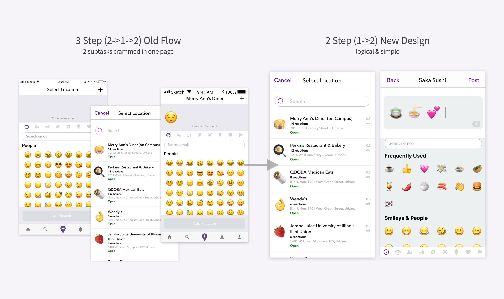

Overview

OPICO is an abbreviation of "Opinionated Emojis." It is an app that allows the users to react to locations with emojis. It can be a social space where we simply share our reactions to places with maximum 5 emojis, or a review app to post and read compact emoji reviews of restaurants, shopping malls, etc.
My role: I led improve existing designs as well as designed new features and flows. Moreover, I participated in various user research and survey interviews and found out very interesting aspects of our users.. Below are some of the UX works I have accomplished or currently working on.
#: UX Research, UI Design, Prototyping, Animation, 2019 CHI Conference, 2018 HackIllinois
Skills: Sketch, After Effects, Balsamiq, React Native
Posting Flow Renewal 🚧
Post Reaction task is the main feature of OPICO, as it allows the users to post their emoji reactions so that others' can see and like. The original design and flow of this task received some feedbacks that it did not reflect the user flow or logic very well.
High level goals
Post Reaction task is divided into 2 subtasks: Set Location and Add Reaction tasks, which should be completed in a sequential order. However, OPICO's original interface treated these subtasks as one single task, having them crammed in one interface, thus overwhelming the interface. Also, it doesn't suggest users to complete tasks step-by-step but instead allowed them to start reacting with emojis without setting their location first, which logically does not make sense.
Design Process
In the above interface, if you want to add a location, you have to tap the "+" button to move to "Set Location" page, search for and select a location, and come back to the main page to add your reaction, which I found unnecessary.
I divided the two subtasks into separate pages so that when the users start Post Reaction task, they have to "Set a Location" first, before moving onto "Adding an Emoji" task.
Outcome
Takeaways
Simplifying an overwhelming design and understanding the logical flow resulted in a better use case and interface.
Emoji Map 🗺️
The users can view various emoji reactions not just in the feed page, but also through our emoji map feature.
They can move around the map to view their friends' reactions to various places in the area, or even across the globe!
High level goals
Design Process
Outcome
Takeaways
This Emoji's on 🔥
The Idea
While studying the user data, I realized that for a location, there is almost always several emojis that are most used by all of the users who posted a reaction to that location. For example, for one sushi restaurant in Champaign, IL, 10/12 reactions had a "Sushi" emoji.
Also, most of the emoji keyboards including iOS keyboard has a category called "Frequently Used," which is a category of user's most-used/favorite emojis.
I thought providing a category of the emojis that were used often in other users's reactions and the emojis that the user used most frequently would help increasing the user participation and interest.
The Iterations
When I first came up with the idea, other design team members were skeptical about the idea as showing trending emojis could hinder users' own decisions on which emojis to use. One of the suggestion was to only display the noun emojis such as "sushi" or "dumpling" instead of verb/adjective emojis such as "smiling face" or "thumbs up." By doing so, we can still give recommendations and convenience to the users by providing most-used object/noun emojis, while preventing them from making biased "reactions" with emotional/descriptive emojis. However, we decided to keep user's Frequently-Used emojis (including nouns, verbs, adjectives) as they are rather user's personal favorites rather than other's opinions.
Takeaways
Search Emoji 🔎 & Edit Reaction 📝
High level goals
Editing emojis after initially typing them from the keyboard was not possible in the old interface. If I wanted to delete my third emoji after typing my fifth emoji, I had to delete my fifth and fourth in a row in order to get to my third emoji to finally delete it. As the concept Opico went for was to "Be Simple and Fun" than other social media or business reviewing apps, it was pretty ironic that we did not provide emoji editing feature.
I thought that this was a very important part of OPICO's UI to improve and fix, so I suggested several emoji editing features and methods to our team. With this thought in my mind, I researched several existing apps or softwares that provided editing features for texts or emojis as well as the motional methods to complete those actions including drag&drop or tap&wiggle.
After repeating the process of designing-demonstrating-discussing for several times and getting inspired by other products, I developed the design for new emoji editing features delivered by several user motions.
Emoji Search function is also very crucial as it helps the users find what they need out of 2,666 emojis. Especially for the users who are not comfortable with using emojis or have never used emojis, having a good search service and recommending them what emojis to use when they want to express their ideas is probably the most useful feature.
Takeaways
2019 CHI Submission
User Study Survey
High level goals
Results
Takeaways